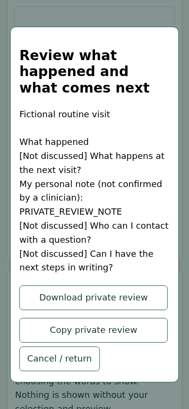

1 / 12 · The decision
Leave with a record of what happened
After the appointment, turn the conversation into clear personal notes and next steps. Nothing is marked done or shared automatically.
Speaker notes
Existing answer notes and next steps are present. This goal connects them into one review that is readable, private and easy to continue.
2 / 12 · Four outcomes
Use words people can understand
Choose Answered, Partly answered, Still unclear or Not discussed. These labels describe the person’s notes, not a medical conclusion.
Speaker notes
The internal saved state remains compatible with older follow-up tools. The visible words are clearer for this review.
3 / 12 · Private answers
Write in your own words
Personal answer notes are labelled as personal and not confirmed instructions. They stay out of conversation view and short exports unless deliberately selected.
Speaker notes
A note is not turned into a fact or instruction by the app. The person decides what to keep private and what to include.
4 / 12 · Next steps
Turn a question into editable work
A question can become a To do next step with plain starting words. Edit it, add a date and contact, or remove it. The app does not guess what should happen.
Speaker notes
The new action is a separate item. Changing it never changes the question or earlier visit.
5 / 12 · Exact review
See the selected record before sharing
The review contains chosen questions, outcomes, selected personal notes, requests and next steps. It excludes source context and history. Copy, download and print use the exact text.

Speaker notes
Export is not save, send, contact or completion. Clipboard failure offers download.
6 / 12 · Save halfway
Keep the work through an interruption
Save the ordinary visit explicitly, then later edits save automatically when storage works. A failed write leaves the editor and honest not-saved status.
Speaker notes
Offline return needs app setup first. Browser data and downloaded files remain local and unencrypted.
7 / 12 · Continue later
Unclear work stays visible
Still unclear and Not discussed items remain available in follow-up and next-appointment selection. The earlier answer and history remain unchanged.
Speaker notes
Creating a later copy does not close or answer the earlier item.
8 / 12 · Another device
Move the saved handoff carefully
Device transfer carries the saved review with normal visit data. Review before importing, keep different copies separate and continue offline.
Speaker notes
There is no syncing or automatic sending. Transfer is a private file and must be stored carefully.
9 / 12 · No automatic completion
Keep the decision with the person
Opening review, viewing a question, making a summary or downloading a file does not mark anything done. Only an explicit state change records a chosen outcome.
Speaker notes
This avoids treating preparation as proof that an answer happened.
10 / 12 · Evidence
7 of 7 after-review browser checks passed
They cover four labels, privacy, editable next steps, saved return, failure, offline behavior, keyboard and narrow layout. The complete regression and package checks are separate.
- AR01 — After-visit labels and personal notes are explicit and private: passed
- AR02 — Turning an answer into a next step creates editable words without changing the question: passed
- AR03 — Exact after-visit review excludes private notes unless deliberately included: passed
- AR04 — Saving halfway through after-visit review preserves labels, notes and next steps: passed
- AR05 — A failed save keeps the after-visit review available and does not partially write: passed
- AR06 — Partly answered and private notes survive offline reopening: passed
- AR07 — Keyboard, narrow layout and no automatic completion keep control with the person: passed
Recorded 2026-09-16T21:48:22.274Z. Results and source files.
Speaker notes
Scenario names are software checks, not participant findings or proof of usefulness.
11 / 12 · Delivery
One clear after-visit handoff
The delivery includes requirements, twelve fictional journeys, this presentation, help, tests and a verified package when the full gate passes.
Speaker notes
The shared desktop/mobile web app remains the target. Native Android and iOS need later packaging and device work.
12 / 12 · Limits
Useful boundaries remain visible
No medical advice, automatic interpretation, account, sending, scheduling, participant, physical-device, screen-reader or usefulness claim is included.
Speaker notes
A future evaluation with people is needed to learn whether this helps and what should change.